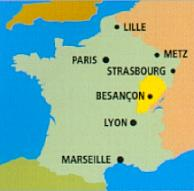
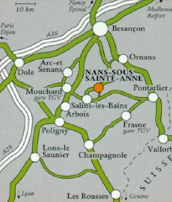

La Maison Rose
Francis Geere
11 Rue du Chateau, 25330 Nans-sous-Sainte Anne, Franche Comté, France
Telephone +33 381 865 541
Mobile: +33 668 472 580
How to find Nans-sous-Ste.Anne

We are halfway down the eastern side of France close to the Swiss border, to the south of Besancon, our county town. On the internet, search on '25330 Nans-sous-Sainte Anne'.
If you can refer to a map of Switzerland, trace a line north from Geneva and west from Berne or Neuchatel in Switzerland. We are approximately where they intersect. Our nearest small towns are Salins-les-Bains and Levier.
Nans-sous-Ste. Anne or Sources du Lison features on smaller-scale maps such as Michelin 243 (or at B1-2 on page 98 of their French road atlas). You will find us easily east-north-east of Salins-les-Bains, or west-north-west of Levier.
Or let your fingers do the locating on Google maps or www.viamichelin.co.uk. Our postcode is 25330. On the smaller scale Michelin map we are a little black triangle!

NB Alas, there is no public transport to/from the village. It is perfectly feasible to come without motor transport and to content yourself with the facilities of the immediate area for a week. There is more than enough good walking, alone, and the village cheese dairy, bread van and restaurants will sustain life. But, clearly, for a wider range of visits – not to mention access to vineyards, cash-machines, supermarkets etc - independent motor transport is essential.
Access
By road
We are some 400 fairly easy miles from Calais 62100. Find a route and timings on Google maps or www.viamichelin.co.uk. Search on Nans-sous-Sainte Anne (Postcode 25330)
www.mappy.fr Yes, Nans-sous-Ste.Anne features here, too!
www.parisrhinrhone.com Brings you to Amancey (5 miles north of Nans). Has information on motorway tolls, current roadworks, weather, and tells you that 107.7FM gives traffic news.
Other potentially useful sites: www.eurotunnel.fr/french/frame_e.htm
Note: French petrol is more expensive than British. On the other hand, diesel is rather cheaper.
By Coach
Consult and reserve: www.eurolines.co.uk. The nearest destination points are: Dijon, Mulhouse, Basel or, at a pinch, Annecy. I can come to find you at any of these for a small fee!
By Rail
Via Paris :
Waterloo- Paris (Gare du Nord) by Eurostar, and Paris (Gare de Lyon) – Dole/Besancon/Mouchard by TGV. Mouchard is the closest to Nans and has one daily TGV service each way.
Avoiding Paris:
Waterloo - Lille by Eurostar, and Lille – Besancon by TGV. One daily TGV service each way.
Consult and reserve:
By Air
Arrival points in order of convenience:
Geneva www.gva.ch (Easyjet, BA, Swiss and most major European airlines)
Lyons www.lyon.aeroport.fr (Easyjet, Air France, British Airways)
Basle www.euroairport.com/fr/ (Easyjet, Swiss, Air France, Lufthansa)
Zurich www.uniqueairport.com/mieter/ (Easyjet, BA, Swiss and other majors).
Schedules, fares and reservations:
Car-hire:
Besancon, Dijon and Dole: Consult www.pagesjaunes.fr , enter ‘Location automobiles’ at Activité and name of town at Localité.
Basle/Mulhouse: www.euroairport.com/fr/ Companies: Avis, Budget, Europcar, Hertz, National Citer, Sixt
Geneva: www.gva.ch. Click on Transportation, then on Car Rental for Avis, Europcar, Hertz or National Citer. Or try www.easycar.com
Lyon: www.lyon.aeroport.fr Click on Services, then on Location des Voitures for Avis, Budget, Europcar, Hertz, National Citer or Sixt.
Zurich: www.uniqueairport.com/mieter/ then search on All Companies for Alamo, Avis, Europcar, National or Sixt.
Some relevant car-hire sites:
www.amandia.com/ (links to a number of companies)
www.europcar.fr or www.europcar.ch
Exchange rate: www.xe.com/ucc/
Weather forecast: www.meteo.fr . Find ours at ‘Besancon’
BBC Radio 4: 198 LW is quite audible all the way down from the North but begins to fade after Dijon, so receeption here depends upon the prevailing atmospherics!
On other Pages:
|
How to find Nans |